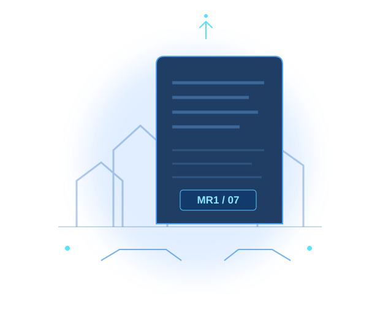

اقرأ
تعرّف إلى الوقائع الأساسية وتسلسل الحكاية.
منصة قراءة وتحليل تفاعلية
حكاية تبدأ بوثيقة… وتكشف سيرة إنسان.
خرج عبد الرحمن في مهمة عمل إلى السويس، ثم انقطع خبره. ومن خلال وثائق متفرقة وشهادات متباينة، نعيد بناء ملامح إنسان لم تستطع الأوراق وحدها أن تروي حكايته.

الفكرة الأساسية
EXPLORE THE STORY
تفتح لك كل مساحة زاوية مختلفة: تسلسل الأحداث، وذاكرة الشخصيات، والدلالات الأدبية، ثم المراجعة والاختبار.
تتبّع بداية المهمة، واكتشف كيف تحوّل الملف الإداري إلى بحث عن مصير إنسان.
↗ 02 / VOICESتعرّف إلى الشخصيات التي تكشف شهاداتها جوانب الحكاية.
↗ 03 / TIMELINEمحطات مرتبة توضّح مسار البحث وتحوّلاته.
↗ 04 / ANALYSISقراءة في الهوية والبطولة والذاكرة وحدود الحقيقة.
↗ 05 / REVIEWتدرّب على بناء إجابة مترابطة تستند إلى شواهد النص.
↗ 06 / CHALLENGEاختبر فهمك للأحداث، ثم راجع تفسير كل إجابة.
↗A CLEAR READING PATH
ابدأ بالحكاية، ثم قارن الشهادات، وانتقل إلى التحليل قبل أن تختبر فهمك.
تعرّف إلى الوقائع الأساسية وتسلسل الحكاية.
قارن بين الشخصيات والوثائق والشهادات.
اربط الأحداث بالهوية والذاكرة والبطولة.
راجع معلوماتك وتدرّب على تفسير الأدلة.
A QUESTION THAT REMAINS
الحكاية لا تمنحنا إجابة نهائية… لكنها تجعلنا نرى الإنسان خلف الملف.
قد تظل الحقيقة ناقصة، لكن أثر الإنسان يبقى حاضرًا في ذاكرة من عرفوه.